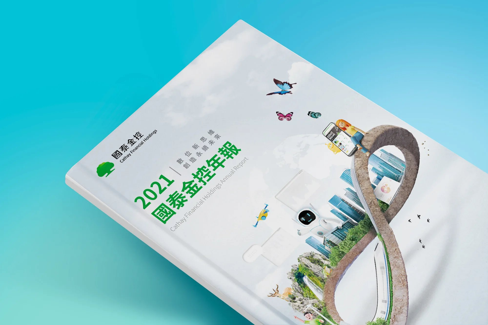

What I made我的設計
以「無限符號 ∞」為核心概念，融合自然關懷、金融科技與生活三大意象，象徵國泰金控持續創新、永續前行的企業精神。透過無限延伸的視覺語言，傳遞品牌在環境永續、科技創新與國際金融服務領域不斷拓展的未來願景。

Overview
國泰金控年度報告書以完整呈現企業營運成果、財務表現與風險管理資訊為核心，向股東、投資人及主管機關傳遞透明、可信賴的企業資訊。
本次年度視覺主題聚焦於金融科技、生活連結與永續發展，透過設計展現國泰金控的創新精神，以及持續推動企業永續的長期願景。
提案範圍年報封面與封底視覺設計
以「無限符號 ∞」為核心概念，融合自然關懷、金融科技與生活三大意象，象徵國泰金控持續創新、永續前行的企業精神。透過無限延伸的視覺語言，傳遞品牌在環境永續、科技創新與國際金融服務領域不斷拓展的未來願景。
透過向國泰金控高階主管進行現場提案，從三家競爭的設計廣告公司中脫穎而出，成功取得該年度年報設計專案。後續延伸提案概念，完成整本年報的視覺規劃、設計執行與最終交付。